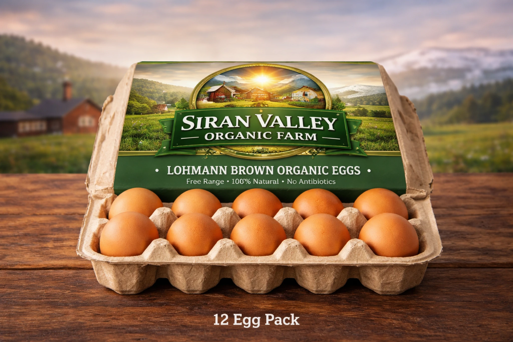
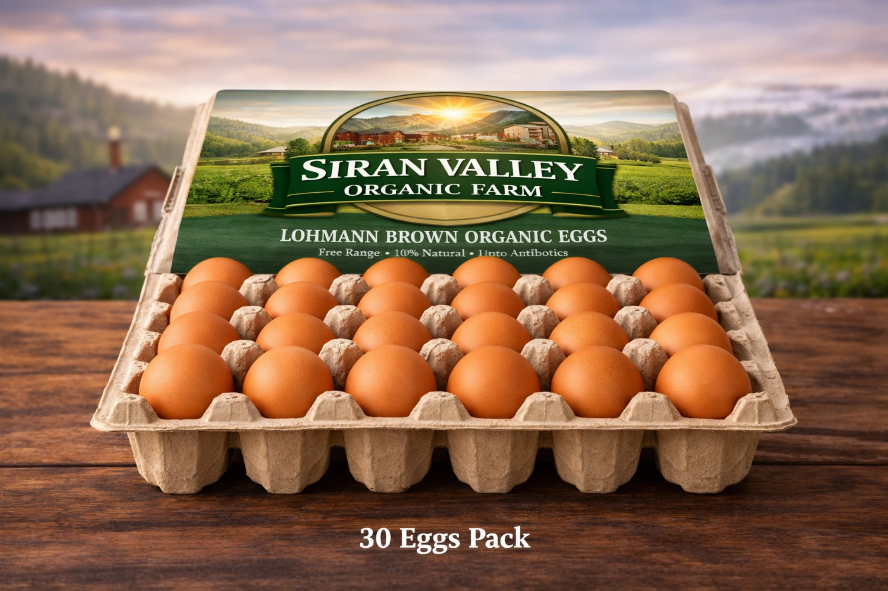
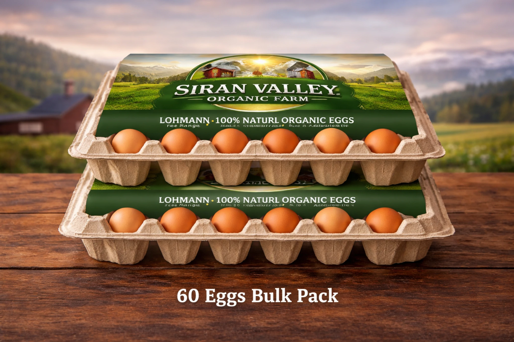
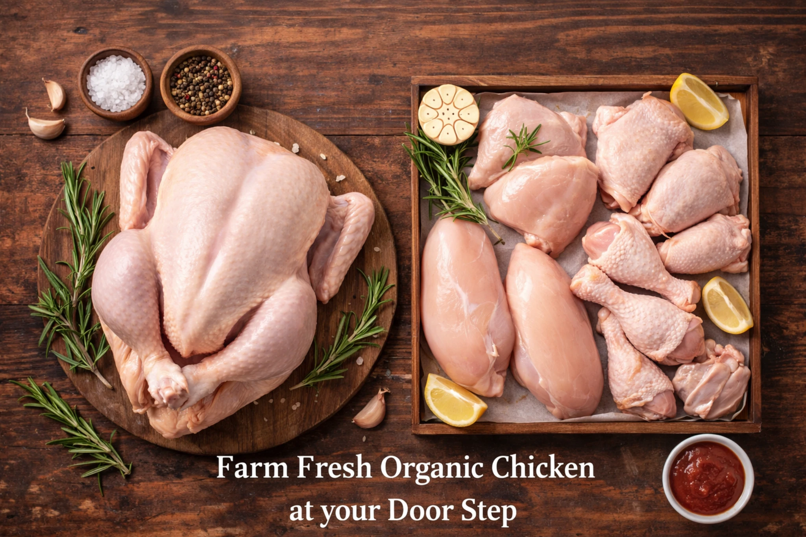

Starter Plan12 eggs per week
Rs. 1,728 / month
48 eggs per month, suitable for light to moderate household use.
Siran Valley Organic Farm is building a trusted Pakistani farm brand around fresh brown eggs, weekly egg subscriptions, pullets for homes and small farmers, and future fresh chicken meat supply.
Our belief is simple: fewer unnecessary hands, clearer sourcing, better freshness and a stronger relationship between the farm and the family.
Built for families who buy eggs every week and want reliable supply, fewer market visits and a direct relationship with the farm.

Starter Plan48 eggs per month, suitable for light to moderate household use.

Most Popular120 eggs per month, ideal for families who use eggs regularly.

Premium Household240 eggs per month, best for large homes or shared family buying.
Simple one-time ordering for customers who want to try Siran Valley eggs before moving to a weekly subscription.
Age-based poultry enquiries for customers who want to rear birds responsibly or buy more advanced pullets with less early-stage care.
 Day-old
Day-oldFor experienced buyers with brooding setup.
 Growing
GrowingMore advanced birds with less early-stage care.
 Near Lay
Near LayNear-ready birds for serious buyers.
Siran Valley is built around a simple food principle: the shorter and clearer the journey from farm to home, the easier it is to protect freshness and build trust.
Our content, product pages and subscription system educate customers before selling to them. That is how a local farm can become a national food brand over time.

This section keeps the future Siran Valley fresh meat line visible while eggs remain the lead product. The same trust-first approach will guide future meat supply.
Deep customer education pages designed to answer real Pakistani search questions and build long-term trust before purchase.
Why freshness is a process, not a slogan, and why fewer handling points matter.
Read guide →Supply ChainHow eggs move through Pakistan's market and why the journey affects quality.
Read guide →TasteThe science and kitchen experience behind better egg taste and texture.
Read guide →NutritionTruth, myths and what customers should actually look for.
Read guide →SavingsHow direct farm supply and planned buying can reduce waste and uncertainty.
Read guide →VisionTrust, transparency and direct farm relationships as the future of food.
Read guide →Watch Siran Valley updates on YouTube and TikTok. Real farm content will become one of the strongest proof layers for trust and SEO.
Customers trust what they can see. Short farm videos, packing clips, bird management updates and delivery moments can support every product page and guide without loading a heavy third-party iframe on first paint.